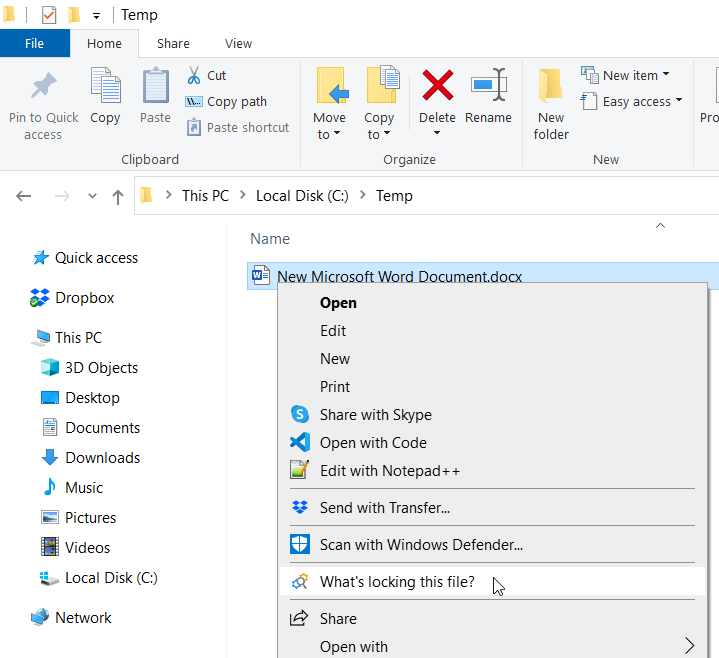
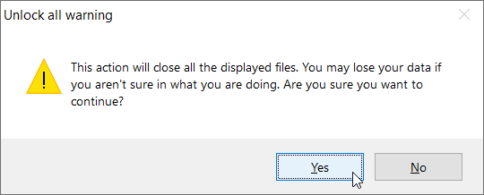

Lock Hunter
Use Lock Hunter to close open file handles.
Deleting, moving, or renaming a file fails when a process has an open handle to it. I previously suggested using Process Explorer to quickly close open file handles. Now I suggest using Lock Hunter because it is simpler and faster.
Process Explorer closes open file handles by killing the corresponding process. Lock Hunter directly closes the open handles while leaving the process alive.
linkLock Hunter
Here is an example of how to use Lock Hunter to close an open handle to a particular file.
Right-click the file and select "What's locking this file?".

Click "Yes" to confirm when prompted by User Agent Control. Then click "Unlock It!"...

...and confirm that want to unlock by clicking "Yes".

linkSummary
Follow these steps to close an open file handle.
- First time
- Download and install Lock Hunter
- Every time
- Right-click the file
- Select What's locking this file?
- Click Yes to confirm the User Agent Control prompt
- Click Unlock It!
- Click Yes to confirm unlocking
linkTags
The tags feature of Coding Blog Plugin is still being developed. Eventually the tags will link somewhere.